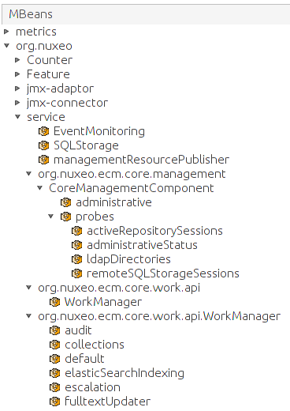

The final, but crucial, aspect we now need to ensure is that the application must keep running smoothly.
The final, but crucial, aspect we now need to ensure is that the application must keep running smoothly.

nuxeo.log.dir property
- Using log4j, you can fine-tune logging configuration
#### Existing Log Files
##### Launcher logs
- nuxeoctl.log Activity from NuxeoCtl.
- console.log Output written to the console (stdout).
##### Server logs
- server.log Server logs.
- nuxeo-error.log Errors raised to the user.
- stderr.log Errors written to the console (stderr).
- classloader.log Class loading errors from Catalina.
- tomcat.log Tomcat logs.
###Monitoring - Logs
####Log4J configuration
- $NUXEO_HOME/lib/log4j.xml
- Filter log level (`ERROR`, `WARN`, `INFO`, `DEBUG`, `TRACE`)
- Increase logs for specific services
- Many configuration examples are commented, activate them depending on your needs (elasticsearch logging, sending logs through email, log rotation...)
###Monitoring - JVisualVM

#### Monitoring the JVM using jvisualvm
Launch jvisualvm in a terminal
#### Use...
##### The Monitor and VisualGC tabs
- To monitor the JVM and garbage collector usage
##### The Sampler tab
- To execute a CPU / memory dump for further analysis
##### The MBeans tab
- Is where probes and events (WorkManager) are exposed
- Also contains useful methods, for example to clear caches
/
#